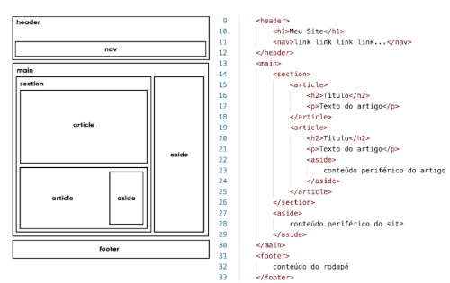

Com o surgimento da HTML5, surgiram as tags semânticas de agrupamento. Isso não significa que as <div> e <span> (Agora chamadas de não-semântica) deixaram de existir ou ficaram obsoletas, mas seu uso agora faz menos sentido, pois temos tags para dividir as partes do nosso documento HTML.
Criar áreas relativas a cabeçalho. Pode ser o cabeçalho principal de um site ou até mesmo o cabeçalho de uma seção ou artigo. Normalmente inclui títulos <h1> - <h6> e subtítulos. Podem também conter menus de navegação.
Define uma área que possui os links de navegação pela estrutura de páginas que vão compor o website. Um <nav> pode estar dentro de um <header>.
É um agrupador usado para delimitar o conteúdo principal do nosso site. Normalmente concentra as seções , artigos e conteúdos periféricos.
Cria seções para sua página. Ela pode conter o conteúdo diretamente no seu corpo ou dividir os contúdos em artigos com contédos específicos. Segundo a documentação oficial da W3C, "uma seção é um agrupamento temático de conteúdos, tipicamente com um cabeçalho."
Um artigo é um elemento que vai conter um conteúdo que pode ser lido de forma independente e dixem respeito a um mesmo assunto. Podemos usar um <article> para definir um post de blog ou fórum, uma notícia, etc.
Delimita um conteúdo periférico e complementar ao conteúdo principal de um artigo ou seção. Normalmente um contúdo,<aside> está posicionado ao lado de um determinado texto ou até mesmo no meio dele.
Múltiplos Níveis: A sua criatividade e planejamento vai definir a estrutura do seu site. sendo assim, é possível ter um ou mais <article> dentro de uma <section> ou até mesmo criar <section> dentro de um <article>. Não existem limitações quanto a isso.
Cria um rodapé para o site inteiro, seção ou atigo. É um conteúdo que não faz parte diretamente do conteúdo nem é um conteúdo periférico (o que caracteriazaria um <aside>), mas possui informações sobre autoria do conteúdo, links adicionais, mapa do site, documentos relacionados.
